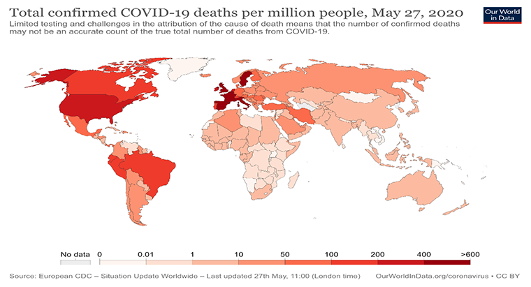
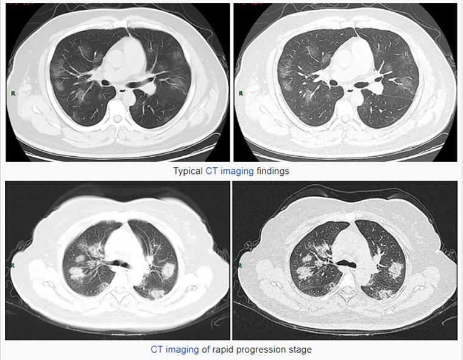
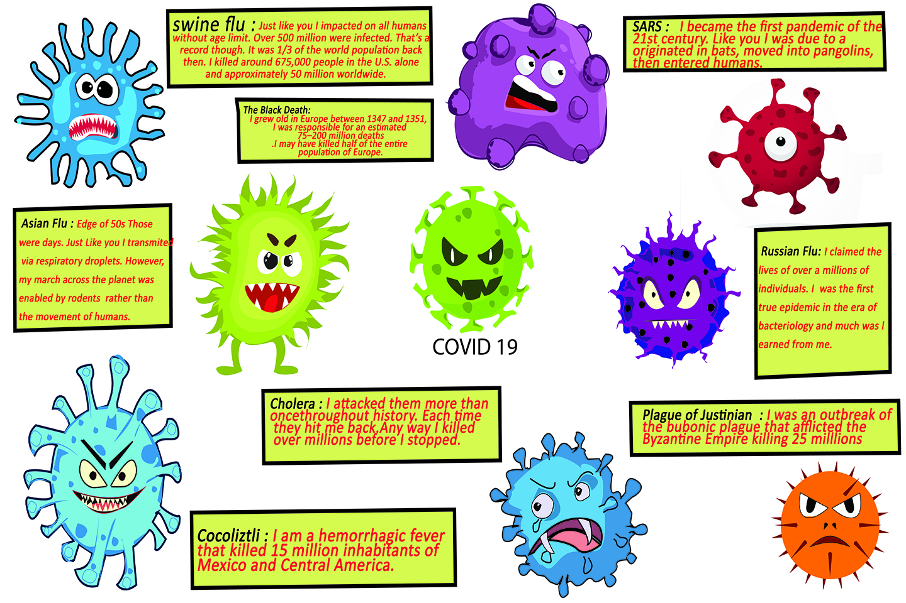

What is Covid-19?
31.05.2020
Coronavirus disease 2019 (COVID-19) is an infectious disease caused by severe acute respiratory syndrome coronavirus 2 (SARS-CoV-2). It was first identified in December 2019 in Wuhan, China, and has since spread globally, resulting in an ongoing pandemic. However, the first case may be traced back to 17 November, 2019.As of 28 May 2020, more than 5.8 million cases have been reported across 188 countries and territories, resulting in more than 359,000 deaths. More than 2.39 million people have recovered.
The virus is primarily spread between people during close contact, most often via small droplets produced by coughing, sneezing, and talking. This virus spread very speed because large number of people met in urban areas.
How Does Coronavirus Attack Your Body?
A virus infects your body by entering healthy cells. There, the invader makes copies of itself and multiplies throughout your body. Within 2 to 14 days, your immune system may respond with symptoms including:
- Fever
- A cough
- Shortness of breath
- Trouble breathing
- Fatigue
- Chills, sometimes with shaking
- Body aches
- Headache
- A sore throat
- Loss of taste
- Loss of smell
- Nausea
- Diarrhea
As fluid collects in your lungs, they carry less oxygen to your blood. That means your blood may not supply your organs with enough oxygen to survive. This can cause your kidneys, lungs, and liver to shut down and stop working.
